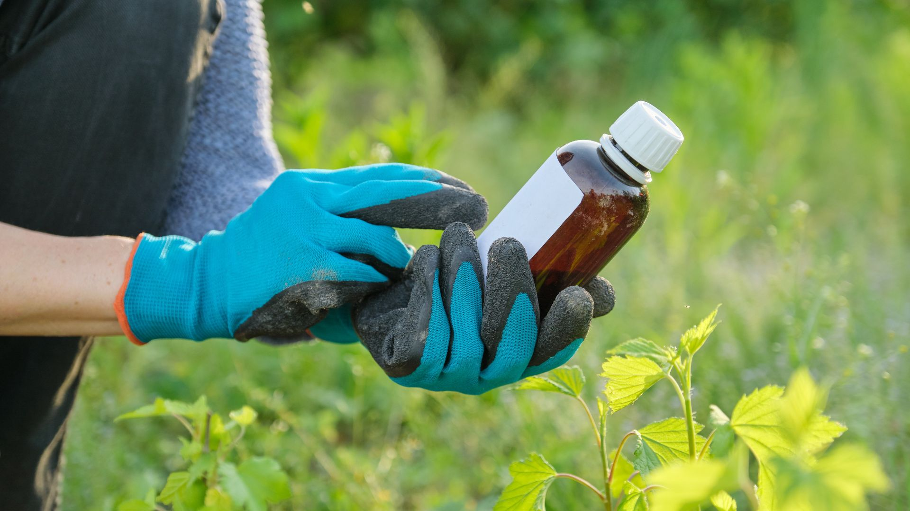
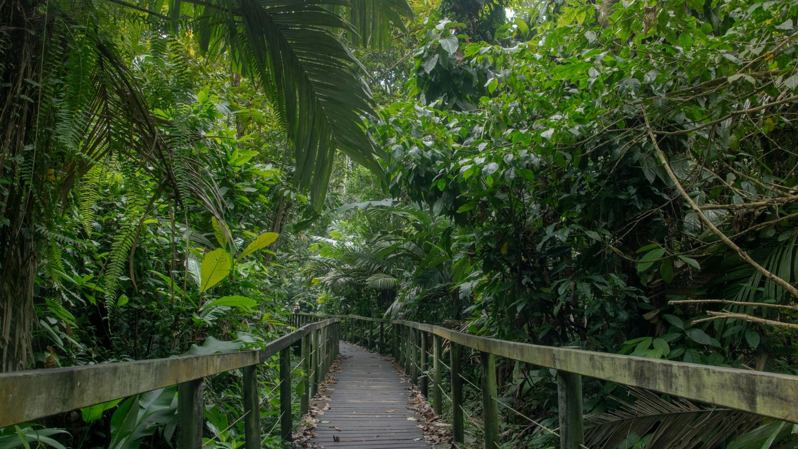

Valldemossa · Illes Balears
El verde, vivido con calma
Un centro de jardinería donde cada planta tiene historia — y cada visita, su ritmo.
DescubrirValldemossa · Illes Balears
Un centro de jardinería donde cada planta tiene historia — y cada visita, su ritmo.
DescubrirColecciones vivas
Temporada, autóctonas y rincones que sorprenden
Del invernadero a la maceta: curaduría y consejo en el mismo lugar.
Luz mediterránea
Inspiración para terraza, jardín e interior
Texturas, color y piezas que armonizan con tu espacio.
Detalle & oficio
Cactus, bonsái y orquídeas con acompañamiento
Porque lo especial merece tiempo y buenas preguntas.
Km 9,3
Carr. de Valldemossa — un entorno para elegir sin prisa
Ven a verlo en persona: aquí no vendemos pantallas, vendemos presencia.
Flores & follaje
La estación se nota en cada rincón
Plantas de temporada que celebran el calendario balear.
Por qué visitarnos
Luz natural, orden y un equipo que escucha antes de recomendar. No es un clic: es olor a tierra húmeda, el brillo de las hojas y la tranquilidad de decidir bien.
SA Jardinería
En SA Jardinería reunimos experiencia y cariño por lo vegetal en un espacio pensado para quien busca calidad, cercanía y productos elegidos con criterio.
No somos e-commerce: creemos en ver el follaje, tocar la cerámica y charlar del riego. Así elegimos contigo lo que mejor encaja en terraza, jardín o interior.
Colecciones
Ocho mundos vegetales — cada uno con su propia atmósfera.
Color y variedad que siguen el ritmo del año.
Especies que entienden el paisaje local.
Arte vivo, con guía experta.
Elegancia y matices para aficionados.
Verde para hogares y espacios cubiertos.
Cerámica y diseño para cada pieza.
Objetos con alma para jardín y hogar.
Complementos
Todo lo que necesitas para cuidar, proteger y embellecer tus plantas — con criterio profesional y selección presencial.
Selección disponible en tienda física. Los precios son orientativos y pueden variar según formato, temporada o disponibilidad.

Piezas y detalles que dialogan con tus plantas, la luz de la isla y el estilo de cada espacio.
Desde 14 €
Ver en tienda
Sustratos, útiles de trabajo, riego y materiales fiables para cuidar mejor cada planta.
Desde 6 €
Consultar selección
Soluciones para proteger cultivos y plantas ornamentales con orientación clara y responsable.
Según producto
Preguntar en tiendaPequeños básicos y piezas especiales que suelen acompañar muy bien una visita al Garden.

Regaderas, pulverizadores y soluciones para ajustar rutinas de agua.
Desde 9 €

Formatos, acabados y piezas para acompañar plantas de interior y exterior.
Desde 12 €

Detalles y básicos que cambian según estación, floración y disponibilidad.
Variable

Pequeñas piezas para regalar verde, textura o un gesto cuidado.
Desde 8 €
Selección presencial
La tienda se mueve con la temporada, las plantas y las necesidades de cada visita. Te orientamos para elegir materiales, macetas y complementos con sentido.
«No cultivamos prisas: cultivamos confianza, color y raíces que perduran.»
Un mosaico de texturas, luces y rincones.





Agenda
Talleres, encuentros y jornadas — el calendario cobra vida en el centro.


Actualidad: anunciamos fechas en el centro y en redes. Pásate y te contamos lo próximo.

Visítanos
Horario y teléfono: consultad en tienda o los canales que publiquemos.
Carr. de Valldemossa, KM 9,3 — Nord, Illes Balears.